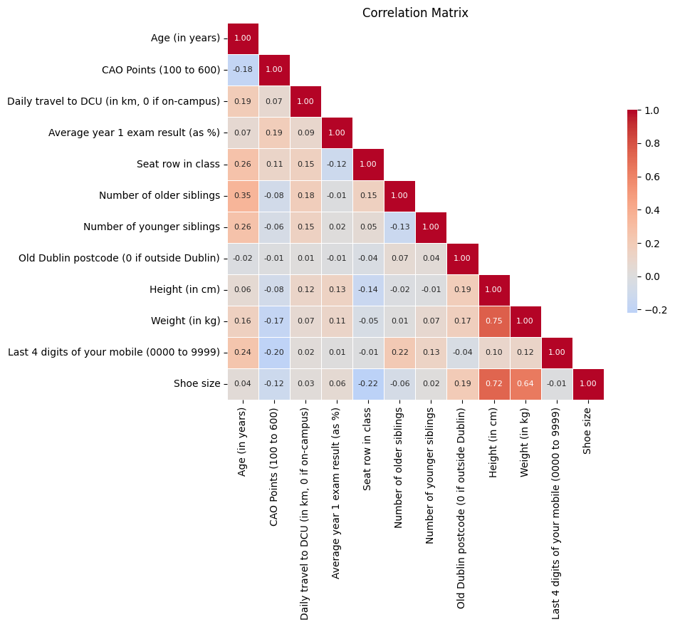
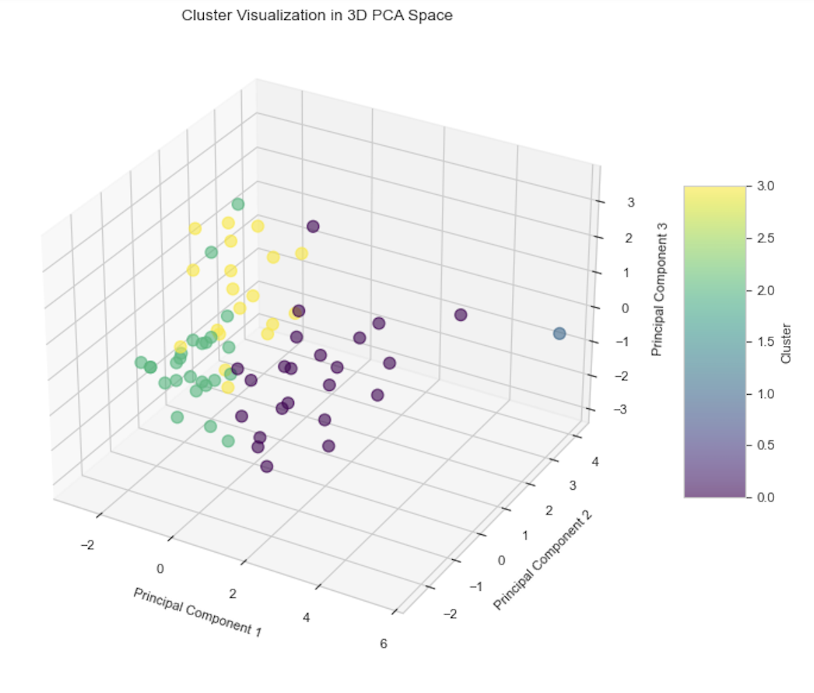
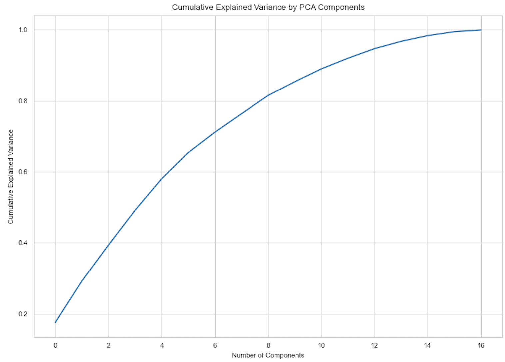

Personality Prediction
Leveraging Machine Learning to Decode Human Traits
In the dynamic field of data science, the fusion of psychological metrics with advanced analytical techniques opens new avenues for understanding complex human behaviors. This portfolio piece details a pioneering project: predicting personality traits using a sophisticated machine learning pipeline, underpinned by Principal Component Analysis (PCA) for dimensionality reduction. This initiative not only demonstrates technical prowess in handling high-dimensional data but also underscores a deep commitment to applying data science in unraveling the nuances of human personality.
Project Overviewn
The project embarked on a quest to understand how various factors, including physical characteristics, personal preferences, and behavioral ratings, correlate with personality traits. The dataset, rich in both numerical and categorical variables, underwent a thorough preprocessing phase to ensure its readiness for advanced statistical analysis. The heart of the analysis lay in the application of PCA, a technique chosen for its efficiency in reducing dimensionality while preserving the essence of the dataset's variance.
Data Preprocessing: The Foundation
Data preprocessing formed the bedrock of the project, involving meticulous cleaning, normalization, and encoding steps. Variables such as height, weight, shoe size, and subjective ratings on psychological scales were standardized to bring uniformity to the data, ensuring that each variable contributed equally to the analysis. This phase underscored the importance of rigorous data preparation in paving the way for meaningful statistical exploration.
The PCA: Extracting Meaning from Multidimensionality
With the data primed, PCA was employed to tackle the dataset's complexity head-on. The technique's ability to transform the original variables into a set of linearly uncorrelated components was pivotal in uncovering the underlying structure of personality traits. The project's PCA revealed seven principal components, which together accounted for 72% of the total variance within the dataset, a significant reduction from the multidimensional original space.
Principal Components Unpacked:
Principal Component 1 (PC1) emerged as a fascinating amalgam of physical attributes and a hint of personal ratings, suggesting a blend of innate and psychological dimensions. PC2 and subsequent components progressively unraveled the intricate dance between personal ratings on psychological scales and various other metrics, each layer peeling back to reveal further nuances of personality. The meticulous breakdown of contributions across components illuminated the complex interplay between seemingly disparate variables, highlighting how physical attributes, daily habits, and subjective self-assessments converge to sketch the multifaceted portrait of personality.
 Insights and Implications
The PCA's outcome, particularly the explained variance ratio and the detailed contributions to each principal component, offered profound insights into the nature of personality. Notably, the dominance of physical attributes in PC1 raised intriguing questions about the relationship between the corporeal and the psychological, prompting a reevaluation of traditional personality assessment models.
Furthermore, the variance explained by the components underscored the complexity of human personality, revealing that while a substantial portion can be understood through PCA, a significant depth remains beyond the reach of this analysis. This observation elegantly captures the project's essence — a quest not to oversimplify personality but to appreciate its inherent complexity through a quantitative lens.
Challenges, Reflections, and Future Directions
Embarking on this analytical journey was not without its hurdles. The choice of variables, the decision on the number of components to retain, and the interpretation of the results demanded a delicate balance between statistical rigor and psychological insight. This project served as a powerful reminder of the complexities involved in quantifying human traits and the need for interdisciplinary approaches in data analysis.
Looking ahead, the project opens numerous avenues for further exploration, including the integration of additional psychological metrics, the application of PCA in predictive modeling, and the exploration of alternative dimensionality reduction techniques. The potential to enhance personality prediction models with these insights beckons future research, promising richer understanding and more nuanced applications in psychology, marketing, and beyond.